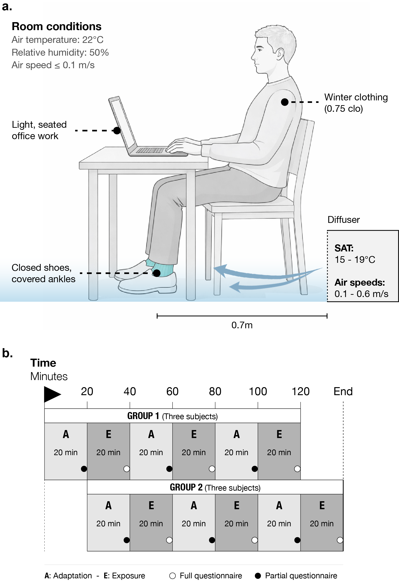
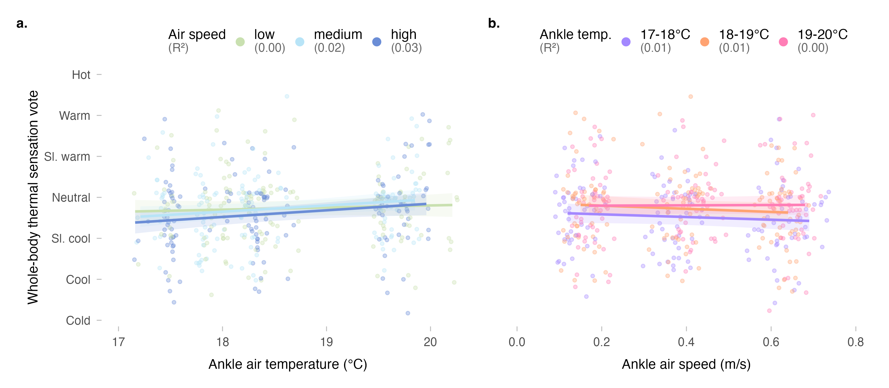
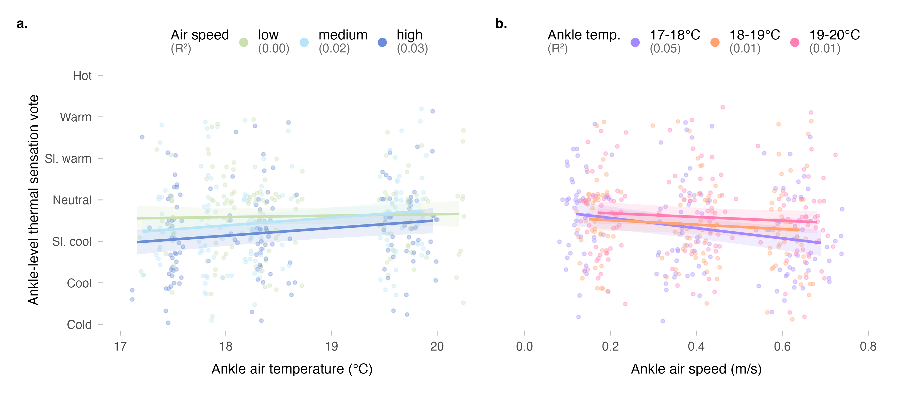
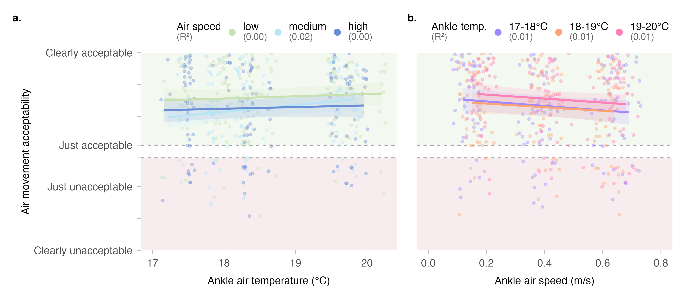

![]()
| Construct | Use | Question | Scale type | Levels |
|---|---|---|---|---|
| Thermal sensation | F, P | How do you feel right now? | 7-point continuous | −3 (cold) −2 (cool) −1 (slightly cool) 0 (neutral) +1 (slightly warm) +2 (warm) +3 (hot) |
| Thermal comfort | F, P | Right now do you find this environment…? | 6-point continuous | −3 (very uncomfortable) −2 (uncomfortable) −1 (just uncomfortable) +1 (just comfortable) +2 (comfortable) +3 (very comfortable) |
| Thermal preference | F, P | Right now would you prefer to be…? | 3-point ordinal | −1 (warmer) | 0 (no change) | +1 (cooler) |
| Thermal acceptability | F, P | Please rate your acceptance of the current thermal environment | 4-point continuous | −2 (clearly unacceptable) −1 (just unacceptable) +1 (just acceptable) +2 (clearly acceptable) |
| Air movement acceptability at ankles | F | Please rate your acceptance of air movement at your ankles | 4-point continuous | −2 (clearly unacceptable) −1 (just unacceptable) +1 (just acceptable) +2 (clearly acceptable) |
| Air movement preference at ankles | F | Right now around my ankles I would prefer…? | 3-point ordinal | −1 (less air movement) | 0 (no change) | +1 (more air movement) |
| Clothing change | F | Did you adjust your upper body clothing? | binary | Yes | No |
Ankle draft risk model under winter clothing conditions
1 Center for the Built Environment, University of California, Berkeley, USA
2 Department of Architecture, College of Environmental Design, University of California, Berkeley, USA
3 Department of Civil and Environmental Engineering, College of Engineering, University of California, Berkeley, USA
4 Department of Architecture, School of Design, Shanghai Jiao Tong University, Shanghai, China
✉ Correspondence: Tobias Kramer <t.kramer@berkeley.edu>
Abstract
The ankle draft model in ASHRAE Standard 55 was derived from studies where participants mainly wore summer clothing with exposed ankles (~0.6 clo), potentially leading to overly conservative perimeter heating or facade insulation requirements in winter conditions where occupants typically wear long trousers, socks, and closed-toe shoes (~0.75 clo). We evaluated thermal comfort responses to ankle-level draft under these conditions in controlled laboratory experiments with 51 participants. In a within-subjects repeated-measures design, participants were exposed to nine conditions varying in ankle-level air temperature (17–20°C) and air speed (0.1–0.7 m/s), simulating window downdraft.
The existing ankle draft model systematically overpredicted dissatisfaction across all conditions. While prior studies with exposed ankles reported dissatisfaction rates of 23–57%, we observed only 6–20%, with the existing model overestimating by an average of 2.3 times and by as much as 30% at high air speeds. We developed separate generalized linear mixed-effects models for covered- and uncovered-ankle conditions from this and prior studies. The covered-ankle model showed lower baseline dissatisfaction risk and reduced sensitivity to air speed. Only whole-body thermal sensation and ankle-level air speed were significant predictors; ankle air temperature and room temperature were non-significant within tested ranges. These results are subject to a 20-minute exposure duration and the exclusion of radiant asymmetry from cold window surfaces.
These findings support differentiating ASHRAE Standard 55 ankle draft criteria by clothing level. Adopting a covered-ankle criterion could enable meaningful reductions in perimeter heating and facade insulation without compromising occupant comfort, with benefits for energy use and carbon emissions.
Keywords
thermal comfort; ankle draft; local thermal discomfort; winter clothing; ASHRAE Standard 55
Highlights
- Existing ankle draft model overpredicts dissatisfaction 2.3× under winter clothing
- Covered-ankle dissatisfaction ranged 6–20% vs. 23–57% for exposed ankles
- New covered-ankle model shows lower baseline risk and reduced air speed sensitivity
- Only whole-body thermal sensation and air speed are significant draft predictors
- Separate ASHRAE 55 ankle draft criteria by clothing level could reduce energy use
Graphical abstract

1 Introduction
Cold downdraft near windows is a common source of local thermal discomfort in buildings during winter [1,2]. When outdoor temperatures drop, the interior surface of windows, particularly large or poorly insulated glazing, becomes significantly cooler than the surrounding air. This temperature differential causes nearby air to cool, increase in density, and descend, creating a localized airflow pattern that can cause discomfort at the lower extremities of seated occupants [3,4]. Building designers typically address this issue by increasing the insulation level of windows, so that the interior surface temperature is higher, by adding mullions to break the downward flow or by installing perimeter heating systems, such as radiators or in-floor heating, to counteract the downdraft effect and to prevent thermal discomfort in the ankle region.
The current approach to evaluating ankle draft risk relies on a predictive model presented in [5], which estimates the predicted percentage dissatisfied (PPD) with ankle draft as a function of air speed and temperature at ankle level, as well as whole-body thermal sensation, all factors previously identified as key modulators of draft sensitivity [6,7]. This model was derived from laboratory experiments conducted under cooling conditions typical of underfloor air distribution (UFAD) and displacement ventilation systems and is incorporated into ASHRAE Standard 55 [8]. Importantly, the 110 participants in these foundational studies, including an earlier investigation by [9], wore summer clothing with exposed ankles, resulting in clothing insulation levels of approximately 0.6 clo.
However, building occupants in winter typically wear substantially different attire. Analysis of the ASHRAE Global Thermal Comfort Database II [10] indicates that median clothing insulation in commercial spaces during heating seasons is approximately 0.75 clo [11], with occupants commonly wearing long trousers, closed-toe shoes and socks that cover the ankle region. This discrepancy raises an important question: does the current ankle draft model, which is calibrated for summer conditions and derived from experiments where approximately two-thirds of test cases involved exposed ankles, accurately predict discomfort when ankles are covered by clothing?
If the current model overestimates draft risk under winter clothing conditions, the practical implications are significant. Designers may be specifying solutions, like perimeter heating systems, that are larger than necessary, or installing them in situations where they could be avoided entirely. This has consequences for both first costs and operational energy use and related carbon emission. Conversely, if the model underestimates risk, occupants may experience discomfort that compromises satisfaction and performance.
The objective of this study is to evaluate thermal comfort responses to ankle-level draft under typical winter clothing conditions through controlled laboratory experiments. We aim to: (1) characterize whole-body and local thermal perception across a range of ankle-level air temperatures and air speeds representative of window downdraft conditions; (2) compare observed dissatisfaction rates with predictions from the existing ankle draft model; and (3) assess whether the current ASHRAE 55 criteria require adjustment for winter scenarios. The findings are intended to inform guidance on perimeter heating requirements and support more energy-efficient building design without compromising occupant comfort.
2 Methods
2.1 Experimental design
We conducted a controlled laboratory experiment using a within-subjects repeated-measures design. Each participant was exposed to nine experimental conditions in a 3×3 factorial arrangement, varying supply air temperature (SAT) at three levels (15, 17, and 19°C) and air speed at ankle level at three levels (low, medium, high; ranging between 0.1–0.7 m/s). The SAT and air speeds were selected to represent the range of conditions associated with window downdraft under typical winter conditions [12] and to be consistent with earlier studies focusing on summer conditions [5,9]
Participants attended four sessions: an introductory session for explaining the experiment and obtaining consent, followed by three experimental sessions of approximately two hours each. Each experimental session corresponded to one SAT level, or ankle-level air temperature, respectively, with participants experiencing all three air speed conditions within that session in a counterbalanced order. We scheduled sessions on separate days to minimize carryover effects and subjects were allowed to attend the three sessions in their preferred order.
2.2 Climate chamber and apparatus
We conducted the experiment in the climate-controlled chamber at the Center for the Built Environment, UC Berkeley. The chamber floor area is approximately 25 m². We set up three workstations to allow simultaneous testing of multiple participants and three seats for reacclimatization during breaks in the back of the room. Ambient room conditions were maintained at approximately 22°C operative temperature, 50% relative humidity, and background air velocity below 0.1 m/s, targeting a whole-body thermal sensation of approximately −0.5 (slightly cool) on the ASHRAE seven-point scale and as calculated using the CBE Comfort Tool [13].

We used custom built displacement diffusers to deliver conditioned air to the ankle region of participants seated at the three workstations. To simulate a window downdraft, the diffuser was positioned 0.7 m behind each workstation, directing airflow toward the participants’ lower legs. This setup targeted one of the most thermally sensitive body regions highly susceptible to draft, as described by [14]. The diffuser was connected to an independent air handling unit capable of delivering supply air at the target temperatures and flow rates. The three supply air temperatures represent temperatures at the VAV outlet and we controlled air flow rates by damper adjustment. Turbulence intensity at the measurement location was approximately 30% (see Table 4), consistent with values reported in prior ankle draft studies [2,5]. The three seats in the back of the room were not affected by the diffusers, which were directed at the three workstations only.
2.3 Monitoring
2.3.1 Environmental
We measured head-level air temperature (1.1 m) at each workstation using calibrated Atmocube monitors (Atmotech Inc., United States; air temperature: -40 to +125°C, ±0.5°C, relative humidity: 0 to 100%RH, ±2 %RH, CO2: 0 to 5000 ppm, ±50 ppm + 2.5% of reading at standard room levels) positioned within 0.5 m of participants. To measure air velocity and air temperature at ankle level (0.1 m) we used the AirDistSys 5000 omnidirectional hot-wire anemometers (Sensor Electronic, Poland, air velocity: 0.05-5 m/s, accuracy: ±0.02 m/s ±2% of reading; temperature: -10 to +50°C, accuracy: ±0.2°C, sampling interval: 1 s). Room-level measurements of CO2 concentration, PM2.5, illuminance and sound pressure levels were recorded throughout each session but not reported here because they stayed constant and within expected ranges.
2.3.2 Physiological
In addition, we continuously recorded participants’ skin temperature on the lateral lower leg (mid-calf) and feet using iButton sensors (Thermochron, Maxim Integrated, USA, Type DS1923; measurement range: 20°C to 85°C; accuracy: ±0.5°C; resolution: 0.0625°C) attached with medical-grade hypoallergenic tape. These sites were selected as the most practical iButton attachment locations in the lower extremity, bracketing the ankle region; direct placement at the ankle was not feasible due to the bony lateral malleolus. We used the skin temperature data to assess local cooling responses and as physiological correlates of subjective thermal sensation.
2.3.3 Subjective feedback
To assess the perception of the thermal environment we used validated scales consistent with prior ankle draft research and ASHRAE Standard 55 requirements. We employed two questionnaires: a comprehensive one, encompassing all questions, administered shortly before the conclusion of the exposure (F), and a concise, partial one (P), comprising a subset of the questions, at the end of each adaptation period. For details on the timing of the questionnaires, please refer to Figure 2, and for information on the constructs and their respective scales, please refer to Table 1 below. We administered the questions electronically via a custom survey tool written in Java. Participants were not required to respond to any individual question, though completion rates were monitored.
2.4 Participants
We recruited 51 participants from the university community and local area through the Experimental Social Science Laboratory (Xlab) platform and email outreach to individuals who had participated in previous studies and consented to future contact. Eligible participants were between 21 and 55 years of age, fluent in English, and free from chronic cardiorespiratory conditions or recent major surgery. Pregnant individuals were excluded. The UC Berkeley Committee for Protection of Human Subjects (CPHS) approved the research protocol (CPHS #2025-07-18795). Before the tests, all subjects signed an informed consent form. Demographic details of the cohort are summarized in Table 3.
2.5 Experimental protocol
Upon arrival for each experimental session, we checked participants for elevated temperature and fitted them with skin temperature sensors. Participants then entered the climate chamber and completed a 20-minute adaptation period in the acclimatization zone under baseline conditions.
To simulate typical winter attire, we instructed participants to wear a long-sleeve top, long trousers (ending just above the ankle), thin socks, and closed-toe shoes. This ensemble targets a clothing insulation of approximately 0.75 clo, consistent with the median value observed in commercial buildings during heating seasons [10]. Participants were permitted to make minor clothing adjustments during sessions (e.g., rolling sleeves), and any changes were recorded.
Following adaptation, participants were exposed to three consecutive 20-minute conditions at different air speed levels, with 20-minute rest periods between conditions (see Figure 2). The 20-minute exposure duration was selected to match the protocol used in the foundational ankle draft studies [5,9], enabling direct comparison of results, and exceeds the 15-minute evaluation period specified in ASHRAE Standard 55 for assessing local thermal discomfort [8]. The sequence of air speed conditions was counterbalanced across participants and sessions. At the end of each exposure and adaptation interval, participants completed the standardized questionnaires listed in Section 2.3.3.
Across the experiment, three participants completed six conditions and another three completed three conditions for personal reasons. One repeated trial resulting from an operational error was excluded, leaving 431 observations for analysis.
2.6 Statistical analysis
2.6.1 Variable processing
Thermal sensation votes were collected on a continuous scale. For descriptive analyses, we mapped these values to the corresponding categorical sensation levels, whereas the original continuous values were retained for statistical modeling. We dichotomized ankle airflow acceptability as acceptable or unacceptable for subsequent analyses. The original recorded votes for thermal acceptability, thermal preference, ankle thermal preference, and ankle airflow preference were retained without further processing. Consistent with the definition used by [5], we defined ankle draft dissatisfaction as an ankle thermal sensation vote below 0 (neutral) together with an ankle airflow acceptability vote below 0. Draft is defined as unwanted local cooling of the body caused by air movement [8]. Because acceptability and preference capture different aspects of occupant response, we also conducted a comparison analysis in the Appendix C using a preference-based definition of ankle draft dissatisfaction.
2.6.2 Descriptive regression
To visualise outcome–predictor relationships in the scatter plots, we fitted per-group linear mixed-effects models with a random intercept for subject to account for the within-subject dependence arising from the repeated-measures design. We report the fixed-effect slope and the marginal R², the proportion of variance explained by the fixed predictor alone, following [15]. Population-averaged prediction lines and 95% confidence intervals were derived analytically from the fixed-effects variance–covariance matrix.
2.6.3 Within-subject comparisons
We used a within-subject repeated-measures design and conducted comparisons between experimental conditions within participants. We analyzed continuous variables using paired-samples t-tests and reported paired Cohen’s \(d_z\) as the effect size. We analyzed ordinal variables using the paired Wilcoxon signed-rank test, reporting the test statistic based on the normal approximation and the effect size \(r\). For multiple pairwise comparisons within each family of tests, we adjusted p-values using the Benjamini-Hochberg method [16].
2.6.4 Evaluation of the existing ankle draft model
Applying the existing ankle draft model to the experimental data, we calculated the predicted dissatisfaction rate for the sample at any given condition.
We assessed model calibration by comparing predicted probabilities with observed outcomes using a logistic recalibration model, following [17]. The calibration curve indicates whether predicted probabilities agree with observed proportions. For example, among observations predicted to have a 30% dissatisfaction rate, about 30% should actually be dissatisfied. The calibration intercept indicates whether predictions are systematically too high or too low, and the calibration slope indicates whether predictions are too extreme or not extreme enough.
We evaluated model discrimination using the AUC (area under the ROC curve). For example, an AUC of 0.8 in this study means that, if we randomly select one dissatisfied person and one satisfied person, the model will assign a higher predicted risk to the dissatisfied person about 80% of the time. Following [18], we interpreted AUC values of 0.70–0.80, 0.80–0.90, and ≥0.90 as acceptable, excellent, and outstanding discrimination, respectively. We considered values below 0.70 to indicate less-than-acceptable discrimination, with 0.50 representing no discrimination.
We assessed overall predictive accuracy using the Brier score [19]. For a binary outcome, the Brier score is the mean squared difference between the predicted probability and the observed outcome, where observed outcomes are ankle draft dissatisfaction (1) or satisfaction (0). A Brier score of 0 is perfect and 1 is very poor.
\[ \mathrm{Brier\ score} = \frac{1}{N}\sum_{i=1}^{N}(p_i - y_i)^2, \]
where \(p_i\) is the predicted probability from the existing model for the \(i\)-th observation, and \(y_i\) is the corresponding binary outcome indicating ankle draft dissatisfaction (1) or satisfaction (0).
In addition, predictions were averaged within each experimental condition and compared with the corresponding observed percentages of dissatisfaction to examine condition-specific prediction accuracy.
2.6.5 Development of the new ankle draft model
The existing ankle draft risk model was developed only for summer conditions. To extend model applicability to broader boundary conditions, we modeled ankle draft dissatisfaction using both the dataset from this study and the dataset from [5]. The sample sizes included in the models are summarized in Table 2. Because both experiments used repeated-measures designs, the observations were not independent. We therefore used a generalized linear mixed model with a binomial distribution and logit link.
| Dataset | Ankle coverage status | Subjects | Observations |
|---|---|---|---|
| Current study | Covered | 51 | 431 |
| Liu et al. (2017) | Covered | 58 | 354 |
| Liu et al. (2017) | Uncovered | 88 | 1062 |
Subject was included as a random intercept to account for between-subject heterogeneity and within-subject dependence arising from repeated measurements. Continuous predictors were mean-centered using the overall means of the dataset before model fitting. Model performance was evaluated using marginal and conditional \(R^2\) [15]. The marginal \(R^2\) quantifies the variance explained by the fixed effects, whereas the conditional \(R^2\) quantifies the variance explained by both fixed and random effects.
Because the inverse-logit transformation is nonlinear, fixed-effect predictions from a logistic mixed model do not directly represent population-averaged probabilities. We therefore estimated marginal predicted probabilities by integrating over the random-intercept distribution using Monte Carlo simulation [20]. Because these marginal probabilities generally cannot be expressed as a simple closed-form equation, we then fitted logistic-form approximation to the Monte Carlo-simulated marginal probabilities. The reported approximation \(R^2\) values quantify the agreement between the closed-form approximation and the Monte Carlo-based marginal predictions. Details of this procedure are provided in Appendix B.
2.6.6 Sample size and statistical power
We conducted a simulation-based power analysis to assess whether our sample of 51 participants was statistically adequate to detect the primary effect of ankle air speed on draft dissatisfaction. At the study-design stage, we used the existing short-duration experimental dataset from [5] as the best available prior reference for a GLMM-based simulation sample-size assessment. Specifically, we fitted a GLMM to the [5] dataset, which included 109 participants, and used this model as the reference model to estimate the probability of detecting the fixed effect of ankle air speed across different sample sizes. This analysis was intended to provide a reference-scenario planning basis for the present sample size, rather than a definitive estimate of the true statistical power for the winter covered-ankle condition.
Using the simr package [21], we simulated 1,000 datasets at each of seven sample sizes ranging from 10 to 109 participants and estimated the proportion of simulations in which the fixed effect of ankle air speed was detected at α = 0.05. The estimated power reached 90.1% at N = 30 participants (95% CI: 88.1–91.9%), exceeding the conventional 80% threshold. The estimated power for the present sample size of N = 51 was 99.2% (95% CI: 98.4–99.7%), indicating that the current sample size was sufficient to detect an air-speed effect comparable to that observed in the [5] reference dataset.
2.7 Software and data
We performed all data processing, statistical analyses, and model fitting in R (version 4.4.1). The main packages we used were tidyverse (version 2.0.0), lme4 (version 2.0.1), rstatix (version 0.7.3), CalibrationCurves (version 3.0.0), and simr (version 1.0.6). Data and analysis code are available on: https://github.com/CenterForTheBuiltEnvironment/ankle-draft.
3 Results
3.1 Participants and environmental conditions
| Sex | No. Subjects | Age [a] | Height [m] | Weight [kg] | Body Mass Index (BMI) |
|---|---|---|---|---|---|
| All | 51 | 22.0 [21.0, 24.0] | 1.68 [1.64, 1.75] | 68.0 [61.0, 75.0] | 23.3 [21.4, 25.6] |
| Female | 30 | 22.0 [21.0, 24.8] | 1.65 [1.63, 1.68] | 64.5 [58.2, 71.5] | 23.0 [20.7, 25.7] |
| Male | 21 | 22.0 [21.0, 23.0] | 1.78 [1.73, 1.83] | 73.0 [66.0, 84.0] | 23.5 [21.6, 24.8] |
Table 3 provides a summary of the demographic information collected from the study participants. Since the demographic data was not uniformly distributed, we use the median and interquartile range (IQR) to describe the dataset. A total of 51 subjects participated in the study (30 female, 21 male), with a median age of 22.0 [21.0, 24.0] years.
| Measurement | 15°C | 17°C | 19°C |
|---|---|---|---|
| Air temperature, head level (°C) | 21.9 ( ± 0.2) | 21.9 ( ± 0.3) | 21.9 ( ± 0.2) |
| Relative humidity (%) | 55.1 ( ± 5.4) | 52.3 ( ± 5) | 51.2 ( ± 4.8) |
| Air temperature, ankle level (°C) | 17.6 ( ± 0.3) | 18.3 ( ± 0.2) | 19.7 ( ± 0.2) |
| Air speed, low (m/s) | 0.14 ( ± 0.02) | 0.16 ( ± 0.01) | 0.18 ( ± 0.01) |
| Air speed, medium (m/s) | 0.37 ( ± 0.02) | 0.39 ( ± 0.03) | 0.42 ( ± 0.03) |
| Air speed, high (m/s) | 0.63 ( ± 0.04) | 0.62 ( ± 0.01) | 0.65 ( ± 0.03) |
| Turbulence, low (%) | 36.8 ( ± 2.1) | 33.6 ( ± 1) | 30.5 ( ± 1) |
| Turbulence, medium (%) | 25.9 ( ± 1.8) | 22.9 ( ± 1.5) | 22.5 ( ± 1.7) |
| Turbulence, high (%) | 23.8 ( ± 0.9) | 23.9 ( ± 0.9) | 23 ( ± 1.4) |
Table 4 provides an overview of the measured environmental conditions. Across all three sessions, head-level air temperature remained stable at 21.9 ( ± 0.2) °C, 21.9 ( ± 0.3) °C, and 21.9 ( ± 0.2) °C, and relative humidity was comparable across sessions, confirming stable background thermal conditions and establishing a baseline in line with the PMV target level of ~ -0.5 (slightly cool).
As the primary experimental manipulation, we set supply air temperatures to 15°C, 17°C, and 19°C to simulate the effect of window downdraft. As shown in Table 4, ankle-level air temperatures, measured by the hot-wire anemometer at 0.1 m, were consistently higher than the supply setpoints due to mixing with the warmer ambient air, and reached ranges of approximately 17–18°C, 18–19°C, and 19–20°C for the three conditions respectively. Because the ankle-level temperature is the quantity relevant to thermal comfort and to the draft risk model, all subsequent analyses use the measured ankle-level air temperature rather than the supply setpoint as the experimental grouping variable. Within each session, we then exposed subjects to three airspeed levels at separate workstations. We measured consistent air speeds across all three workstations and sessions, confirming reliable reproduction of the low (~ 0.15 m/s), medium (~ 0.4 m/s) and high (~ 0.6 m/s) airspeed conditions. Turbulence intensities remained low to medium throughout, indicating stable and controlled airflow [2].
3.2 Whole body thermal perception
Figure 3 shows whole-body thermal sensation votes plotted against ankle air temperature and air speed. Votes ranged predominantly from Cool to Slightly warm across conditions. Thermal sensation increased with ankle-level air temperature in all air speed groups, with steeper slopes at medium and high air speeds (b ≈ 0.15 – 0.16 per °C) than at low air speed (b ≈ 0.05 per °C); however, ankle-level air temperature explained no variance [22] across all groups (R² ≤ 0.03). No systematic relationship was observed between whole-body thermal sensation and ankle air speed, consistent with ankle-level airflow having limited influence on whole-body thermal perception (see Appendix A for response distributions).

Figure 4 shows whole-body thermal acceptability plotted against ankle air temperature and air speed. Responses were predominantly on the acceptable side of the scale across all conditions. No practically relevant linear relationship was found between thermal acceptability and either ankle-level air temperature or air speed (R² ≤ 0.01 in all groups), indicating that the range of conditions tested did not substantially compromise whole-body thermal comfort (see Appendix A for response distributions).

3.3 Ankle level observations
3.3.1 Thermal perception
Figure 5 presents ankle-level thermal sensation votes plotted against ankle air temperature and air speed. Sensations at the ankles were generally cooler than whole-body ratings. Ankle-level air temperature showed a positive association with ankle sensation across all air speed groups (b ≈ 0.03 – 0.19 per °C), consistent with whole-body results. The relationship with ankle air speed was negative across all ankle-level air temperature conditions and strongest at 17–18°C (b = -1.23, R² = 0.05), indicating that higher air speeds increased local cool sensations most noticeably at the coolest ankle-level air temperature. The association was weaker at 18–19°C and 19–20°C (b ≈ -0.45 to -0.53, R² ≤ 0.01) (see Appendix A for response distributions).

3.3.2 Air movement perception
Figure 6 shows air movement acceptability at the ankle level plotted against ankle-level air temperature and air speed. Despite the localized cooling, responses were predominantly on the acceptable side of the scale. Air movement acceptability showed a consistent negative association with air speed across all ankle-level air temperature conditions (b ≈ -0.56 to -0.7 per m/s), while the relationship with ankle-level air temperature was negligible for the low and high air speed groups (b ≈ 0.06) and modest for the medium group (b ≈ 0.22). Linear regression explained a negligible [22] proportion of variance in all groups (R² ≤ 0.023), indicating substantial individual variability in acceptability ratings (see Appendix A for response distributions).

3.3.3 Skin temperature
Figure 7 illustrates the progression of lower-leg skin temperatures throughout the exposure period. Using the pre-exposure adaptation period as a baseline, lower-leg skin temperatures decreased under all conditions, with final changes ranging from -1.7°C to -0.8°C. In general, the magnitude of this skin temperature reduction increased with air speed, as medium and high air speeds produced greater local cooling than low air speed across all three ankle-level air temperatures.
Statistical analysis with Benjamini-Hochberg correction showed that the differences in cooling response between low and medium air speeds, and between low and high air speeds, were significant at all ankle-level air temperatures, with maximum adjusted p-values of p_adj < 0.05 and p_adj < 0.001, respectively. In contrast, the difference between medium and high air speeds reached significance only at 19-20°C (p_adj = 0.012). These findings indicate that increasing local airflow increases the short-term cooling response of the lower-leg skin and most noticeable temperature drops occur when shifting away from the lowest air speed.

It should be noted that lower-leg skin temperature had not fully stabilized by the end of the 20 min exposure. To estimate the potential effect of exposure duration on the results, we further fitted an exponential regression model to the measured skin temperature changes during the first 20 min and extrapolated the fitted trend from 20 to 90 min, as shown in Figure 8. The results indicate that lower-leg skin temperature would continue to decrease after 20 min, with an additional reduction of approximately 0.2–0.4 °C between 20 and 90 min before stabilizing. This extrapolation was broadly consistent with simulations from the Advanced Berkeley Comfort (ABC) model [23] under the same experimental conditions, which predicted an additional lower-leg skin temperature decrease of approximately 0.3–0.7 °C. The corresponding changes in both local and whole-body thermal sensation were below 0.3 on the TSV scale predicted by ABC model. Therefore, although lower-leg skin temperature had not fully stabilized, the projected additional cooling is modest and the main conclusions are unlikely to be substantially altered by longer exposure durations. Nevertheless, the effect on subjective dissatisfaction beyond 20 minutes cannot be directly assessed from the current data, and dissatisfaction rates under prolonged real-office exposure may be somewhat higher than those reported here.

3.4 Dissatisfaction with ankle draft
For each observation, we calculated the predicted percentage of dissatisfaction with ankle draft using the existing ankle draft model based on ankle-level air speed and actual whole-body thermal sensation. Figure 9(a) shows the resulting calibration curve. In a well-calibrated model, the calibration curve should closely follow the 45° ideal line. Although the existing model had a Brier score of 0.14, the systematic deviation of the calibration curve from the ideal line indicates that the existing model consistently overestimated the probability of ankle draft dissatisfaction under winter conditions. In addition, the existing model retained acceptable discriminative ability in the present dataset (AUC = 0.77) [18].
Figure 9(b) compares the dissatisfaction rates predicted by the existing model against our experimental observations under each experimental condition. Across all conditions, the existing model consistently overpredicted local thermal dissatisfaction. At a 17–18°C ankle-level air temperature, the discrepancy between predicted and observed rates widened as air speed increased: the model overpredicted dissatisfaction by 7%, rising to 30% at high flow (0.6 m/s). We observed similar trends at 18–19°C and 19–20°C. Notably, for the 19–20°C at high air speed (0.6 m/s), the model predicted a PPD of 42%, while the actual dissatisfied rate was only 17%, resulting in a mean overestimation of 26%. Across the nine experimental conditions, the mean observed dissatisfaction rate was 13%, whereas the Liu model predicted an average of 30%, corresponding to an overestimation of approximately 2.3 times.

3.5 Updated model for winter conditions
As shown in Section 3.4, the existing model consistently overestimated ankle draft dissatisfaction under winter conditions. This highlights the need for a revised model that accounts for differences in application contexts. To enable an integrated analysis of the effects of different factors on ankle draft dissatisfaction, we combined data from [5] and collected in this study in the modeling dataset. The combined dataset is available at https://github.com/CenterForTheBuiltEnvironment/ankle-draft.
To identify significant predictors, we selected candidate variables based on the initial variable screening procedure used by [5]. These included environmental factors, including ankle-level air speed, ankle-level air temperature, room air temperature, and ankle-level turbulence intensity. Based on the existing ankle draft risk model, we also included sex and whole-body thermal sensation. In addition, we included ankle coverage status to examine clothing influence, and data source to examine potential systematic differences between the datasets after controlling for the other predictors.
We first fitted a model including all candidate predictors to the combined dataset observations (n = 1,847), following the methods described in Section 2.6.5. The result of the screening model is shown in Table 5. Ankle-level air speed, whole-body thermal sensation, and ankle coverage status (uncovered vs. covered) were significantly correlated with ankle draft dissatisfaction, whereas room air temperature, ankle-level air temperature, turbulence intensity, and sex were not significant within the range investigated in this study. The data source was also not statistically significant, suggesting that no significant systematic difference remained between the two datasets after accounting for the measured predictors.
| Predictor | Estimate | SE | z | p |
|---|---|---|---|---|
| Air speed at ankle | 3.18 | 0.58 | 5.53 | <0.001 |
| Sex (male vs. female [reference]) | -0.18 | 0.52 | -0.35 | 0.728 |
| Room air temperature | -0.08 | 0.29 | -0.27 | 0.785 |
| Air temperature at ankle | -0.09 | 0.07 | -1.17 | 0.242 |
| Whole-body thermal sensation | -1.44 | 0.13 | -11.32 | <0.001 |
| Turbulence intensity | 0.32 | 1.37 | 0.24 | 0.813 |
| Ankle coverage status (uncovered vs. covered [reference]) | 1.20 | 0.44 | 2.73 | 0.006 |
| Data source (This study vs. Liu’s summer dataset [reference]) | -1.44 | 0.96 | -1.51 | 0.131 |
Based on these results, we developed separate mixed-effects models for ankle draft dissatisfaction under the ankle-uncovered and ankle-covered conditions, using ankle-level air speed and whole-body thermal sensation as predictors. As shown in Table 6, the two final models had the same structure but different coefficients. The intercept of the covered model was 1.9 units lower than that of the uncovered model, indicating a lower baseline risk of ankle draft dissatisfaction when the ankle was covered by clothing. In addition, the air speed coefficient was smaller in the covered model than in the uncovered model, indicating reduced sensitivity of dissatisfaction to air speed under ankle-covered conditions.
| Condition | Observations | Predictor | Estimate | SE | z | p | Marginal R² | Conditional R² |
|---|---|---|---|---|---|---|---|---|
| Ankle uncovered | 1062 | Intercept | -1.64 | 0.32 | -5.16 | <0.001 | 0.271 | 0.704 |
| Air speed at ankle | 3.51 | 0.61 | 5.75 | <0.001 | ||||
| Whole-body thermal sensation | -1.46 | 0.16 | -9.35 | <0.001 | ||||
| Ankle covered | 785 | Intercept | -3.55 | 0.45 | -7.97 | <0.001 | 0.192 | 0.682 |
| Air speed at ankle | 2.75 | 0.91 | 3.02 | 0.003 | ||||
| Whole-body thermal sensation | -1.46 | 0.22 | -6.62 | <0.001 |
As described in Section 2.6.5, although the conditional prediction from the mixed-effects model has a simple logistic form, the population-averaged marginal prediction requires integration over the random-intercept distribution and generally has no simple closed-form expression. Therefore, we used Monte Carlo simulation to obtain the marginal predictions and fitted logistic-form approximations to them. The resulting models are shown in Figure 10.

For the ankle-uncovered condition, the corresponding approximate closed-form equation (approximation \(R^2\) = 0.9989) is:
\[ PPD_{AD} = \frac{\exp\left(-2.087 + 2.255V - 0.915TS\right)}{1 + \exp\left(-2.087 + 2.255V - 0.915TS\right)} \]
For the ankle-covered condition, the corresponding approximate closed-form equation (approximation \(R^2\) = 0.9968) is:
\[ PPD_{AD} = \frac{\exp\left(-3.224 + 1.884V - 0.983TS\right)}{1 + \exp\left(-3.224 + 1.884V - 0.983TS\right)} \]
Where, \(PPD_{AD}\) is the predicted percentage dissatisfied with ankle draft, \(V\) is air speed at ankle (m/s), and \(TS\) is whole-body thermal sensation. Consistent with the PPD framework established by [24] and adopted in ASHRAE Standard 55, the models are intended to predict population-average responses, or the expected proportion of occupants dissatisfied under given conditions, rather than the thermal response of any individual occupant. The substantial inter-individual variability evident in Figures 3–6 is expected and is accounted for in the mixed-effects model structure through the random subject intercept. In addition, the proposed model was developed based on the experimental ranges covered by the present study and Liu‘s study. Therefore, its application should account for the range of experimental conditions represented in these datasets to avoid inappropriate extrapolation.
4 Discussion
4.1 Comparison with prior research
The central finding of this study is that ankle-level dissatisfaction under winter clothing conditions (≥0.75 clo) is substantially lower than predicted by the existing model of [5] and than observed in prior studies with exposed ankles. In the experiments of [9], where participants wore summer clothing (~0.6 clo) with exposed ankles and lower legs, unacceptability rates ranged from 23% to 57%. Under the ankle-covered conditions in this study, airflow unacceptability ranged from only 6% to 20% across comparable air speed and temperature conditions.
These findings align with other research on the protective effects of lower-body coverage. [25] reported that high-top shoes increased ankle airflow acceptability by approximately 15% in stratified environments, demonstrating that even partial ankle coverage meaningfully reduces sensitivity to local airflow. Similarly, [6] found that occupants with cooler overall thermal sensations are more likely to perceive airflow as uncomfortable, and that higher clothing insulation attenuates the interaction between ambient temperature and airflow-induced discomfort.
The limited variance explained by the fixed-effect predictors in the mixed-effects regression models shown in Figure 5 and Figure 6 further supports this interpretation. Across all conditions, R² values did not exceed 0.05, with the strongest association observed for ankle-level thermal sensation versus air speed at 17–18°C (R² = 0.05). [5] reported an R² of 0.10 for ankle air movement acceptability versus air speed alone, and an adjusted R² of 0.22 for a model including both whole-body thermal sensation and ankle air speed, substantially higher than our values and consistent with the greater sensitivity to ankle draft expected under summer clothing conditions with exposed ankles.
Regarding predictor selection, only whole-body thermal sensation and air speed were significant predictors of dissatisfaction in our models, consistent with the structures reported by [6] and [5]. [26] similarly identified a relationship between overall thermal sensation and draft rate thresholds, further supporting its inclusion as a predictor.
Although the dataset used by [5] included both exposed and covered ankle conditions, no significant clothing effect was identified in their analysis even if the ankle condition (covered vs uncovered) was the third most important variable after ankle air speed and whole-body thermal sensation. However, when we reanalyzed their dataset using a mixed-effects model structure, the clothing effect became statistically significant (p = 0.00423). The discrepancy in the significance of this variable likely stems from their use of standard logistic regression, which pooled observations across subjects without accounting for the non-independence introduced by repeated measures. This approach may have masked the clothing effect as a between-subject variable due to inter-individual variability, which is a limitation addressed in our study through the use of mixed-effects models.
4.2 Mechanisms
Two complementary pathways, physiological and psychological, may explain the reduced sensitivity to ankle draft under winter clothing conditions.
From a physiological perspective, the skin temperature results indicate that winter clothing attenuates, though does not eliminate, the local cooling effect of airflow. During the final steady-state period, significant reductions in lower-leg skin temperature occurred only at the coolest ankle-level air temperature condition (17–18°C), where medium and high air speeds produced lower skin temperatures than the low-speed condition. At 18–19°C and 19–20°C, variations in air speed did not yield significant differences in steady-state skin temperature, and no significant differences were observed between medium and high air speeds at any ankle-level air temperature condition. These findings suggest that detectable local cooling requires a sufficiently large environmental contrast.
Thermal sensation changes are more closely associated with rapid variations in skin temperature than with absolute values [27,28]. In this study, ankle skin temperature variation relative to the baseline adaptation period showed significant differences between low and medium/high air speed conditions across all ankle-level air temperature conditions (effect size d ≈ 0.4–0.9). Consistent with this, local ankle thermal sensation at medium and high speeds was significantly lower than at low speed under the 17–18°C condition. However, air movement acceptability did not differ significantly across conditions, indicating that while air speed produced measurable shifts in skin temperature and local thermal sensation, the magnitude of these changes was insufficient to generate distinguishable differences in dissatisfaction within the tested range. From a heat transfer perspective, clothing coverage increases local thermal resistance and reduces convective and radiative heat exchange [7,29]. It should be noted that the clothing insulation of 0.75 clo in this study represents the whole-body ensemble, whereas the local insulation at the ankle was provided by thin socks (approximately 0.02 clo [8]). Despite this low local insulation, we observed that ankle coverage still suppressed both the mxagnitude and variability of skin temperature changes and made it less likely that occupants cross discomfort thresholds.
Psychological factors may also contribute to the observed tolerance. Occupants wearing thicker lower-body clothing may perceive themselves as “protected,” increasing their tolerance to local airflow. Prior research has demonstrated that thermal perception is not solely determined by physical stimuli but is modulated by expectations and informational cues. Providing occupants with temperature information or group perception feedback can improve thermal comfort evaluations [30], and thermal expectations themselves influence perception [31]. Field studies have also identified associations between perceived control and thermal satisfaction in winter conditions [32]. These findings suggest that the subjective sense of being protected by clothing may enhance tolerance to ankle draft, though this psychological pathway was not directly measured in the present study and warrants further investigation.
Together, these physiological and psychological mechanisms likely act in concert: clothing reduces the physical cooling stimulus while simultaneously altering occupants’ expectations and perceived vulnerability to draft.
4.3 Implications for building design and standards
The ankle draft model of [5], now incorporated into ASHRAE Standard 55, does not distinguish between covered and uncovered ankle conditions. Given the standard’s acceptable thermal sensation range of PMV = −0.5 to +0.5, the current criterion requires ankle-level air speed below 0.22 m/s to achieve less than 20% dissatisfied when TS = −0.5. This constraint may be overly conservative for typical winter environments where occupants wear clothing that covers the ankle.
The findings of this study support a differentiated approach. For winter conditions with ankle coverage (≥0.75 clo), the covered-ankle model developed here indicates that dissatisfaction remains within acceptable limits at air speeds that would exceed the current threshold. Empirical predictions of window downdraft suggest that maximum velocities at approximately 1 m from the façade are around 0.25 m/s, with peak velocities often falling within 0.1–0.2 m/s under milder outdoor conditions or with smaller window areas [33]. Many of these scenarios would be acceptable under the covered-ankle model but flagged as problematic under the current single-threshold approach.
For practitioners, this suggests a two-criteria framework: apply the existing model (or the uncovered-ankle model from this study) when evaluating spaces where occupants are likely to have exposed ankles, and apply the covered-ankle model for winter heating scenarios where long trousers, socks, and closed-toe shoes are expected. Within the near-neutral thermal range where ASHRAE Standard 55 applies, PMV provides the best available proxy for whole-body thermal sensation during design evaluation. These implications relate specifically to the convective ankle draft component; radiant asymmetry from cold glazing, governed by a separate criterion in ASHRAE Standard 55 (Section 5.3), should be evaluated independently and may independently necessitate perimeter heating near large or poorly insulated windows.
The practical benefits are significant. Perimeter heating systems, increased façade insulation and other techniques used to reduce the downdraft represent non-trivial costs and carbon emissions in both installation and operation. If covered and uncovered conditions are evaluated separately, designers may be able to downsize or remove solutions used to manage the problem. This approach could yield meaningful reductions in first costs, energy consumption, and associated carbon emissions while maintaining occupant comfort.
It should also be noted that the proposed models are not limited to window downdraft scenarios: since the inputs are ankle-level air speed, air temperature, and whole-body thermal sensation — all directly measurable quantities — the models are equally applicable to other low-velocity air distribution strategies producing similar ankle-level conditions, including underfloor air distribution and displacement ventilation systems.
4.4 Limitations
Several limitations should be considered when interpreting these findings.
First, this study was conducted in a controlled laboratory environment with standardized clothing, which differs from real settings where occupants exhibit considerable variability in attire even during winter months. While we targeted 0.75 clo to represent median winter clothing, actual insulation levels vary with individual preferences, building temperatures, and cultural norms. The protective effect of ankle coverage may differ with clothing types not tested here, such as ankle-length skirts, cropped trousers, or low-cut shoes.
Second, the participant sample consisted primarily of university-affiliated individuals within a limited age range. Thermal sensitivity varies with age, and older occupants may respond differently to ankle draft. The generalizability of these findings to broader occupant populations warrants further investigation.
Third, to enable a comparison with Liu’s study, the experimental protocol used the same 20 min exposure duration, whereas real occupants may experience sustained exposure over several hours. Although the extrapolation analysis suggested that the effect of longer exposure on the main conclusions may be limited, these estimates remain assumption-based. Air movement acceptability beyond the 20 min exposure period could not be directly predicted. Therefore, the percentage of occupants dissatisfied with ankle draft under longer exposure durations may be higher than that estimated by the current model. Similarly, participants remained seated throughout the experiment; standing or walking occupants may experience different ankle-level thermal conditions.
Fourth, the experimental conditions covered supply air temperatures of 15–19°C, leading to ankle-level air temperatures from 17-20°C, and air speeds of 0.1–0.7 m/s. While these ranges were selected to represent typical window downdraft conditions, more extreme scenarios (colder supply/ankle-level temperatures or higher velocities) were not tested. The model predictions should be applied with caution outside the tested parameter space.
Fifth, airflow was delivered from behind the participants to simulate a window downdraft approaching their lower legs from the façade. This scenario, identified by [14] as one of the most unfavorable situations, was used to study the impact of airflow on the participants. Other airflow directions (lateral or frontal) may produce different perceptual responses, particularly given potential differences in skin exposure and attention to the stimulus source.
Finally, the experimental setup simulated the convective component of window downdraft but did not include radiant asymmetry from a cold window surface. In real buildings, occupants near poorly insulated glazing experience both convective cooling from downdraft and radiant heat loss to the cold surface. The combined effect of these two mechanisms on ankle-level comfort was beyond the scope of this study.
5 Conclusions
This study evaluated thermal comfort responses to ankle-level draft under typical winter clothing conditions. Through controlled laboratory experiments with participants wearing approximately 0.75 clo ensembles that covered the ankle, we characterized local and whole-body thermal perception across a range of ankle level air temperatures (17-20°C) and air speeds (0.1–0.7m/s) simulating window downdraft.
The principal findings indicate that the existing ankle draft model systematically overpredicts dissatisfaction under winter clothing conditions. While prior studies with exposed ankles reported dissatisfaction rates between 23% and 57% under similar air speeds, our observations with covered ankles ranged from only 6% to 20%. This suggests that ankle coverage substantially reduces sensitivity to local draft, a conclusion supported by the covered-ankle model developed in this study; the model demonstrates both a lower baseline risk and a reduced response to air speed compared to uncovered-ankle models, with an intercept difference of 1.9 units on the logit scale.
Consistent with prior model structures, we found that whole-body thermal sensation and air speed at the ankle are the primary predictors of dissatisfaction, whereas ankle air temperature, room temperature, and turbulence intensity were not significant within the tested ranges.
This reduced sensitivity under winter clothing appears to stem from a combination of physiological mechanisms and potentially psychological factors. Physiologically, increased thermal resistance from clothing coverage likely attenuated the effect of local cooling, with lower-leg skin temperature decreasing by 0.8°C to 1.7°C across all experimental conditions. Psychologically, perceived protection from clothing may also have contributed to the reduced sensitivity.
These findings support a differentiated approach to ankle draft assessment in building standards. For winter heating scenarios where occupants typically wear clothing that covers the ankle (≥0.75 clo), the covered-ankle model provides more accurate predictions than the current ASHRAE Standard 55 criterion. Adopting separate criteria for covered and uncovered conditions could enable significant reductions in perimeter heating requirements without compromising occupant comfort, yielding benefits in installation costs, energy consumption, and carbon emissions.
Declaration of competing interest
All authors declare no competing interest. The Center for the Built Environment (CBE) at the University of California, Berkeley, with which the authors are affiliated, is advised and funded in part by approximately 50 partners that represent a diversity of organizations from the building industry, including manufacturers, building owners, facility managers, contractors, architects, engineers, government agencies, and utilities.
Data availability
The datasets generated and analyzed during the current study as well as the full source code of the data analysis workflow are available in the following GitHub repository: https://github.com/CenterForTheBuiltEnvironment/ankle-draft
Declaration of Generative AI and AI-assisted technologies in the writing process
During the preparation of this work, the authors utilized the chatbot Claude to enhance the language and readability of the content. Subsequently, they reviewed and edited the material as required, while maintaining full accountability for the publication’s content.
Acknowledgements
This research was supported by Schüco and the Center for the Built Environment (CBE) at the University of California, Berkeley. The authors express their gratitude to Kit Elsworth for his valuable input and leadership throughout the project.
Appendix A: Response distributions
The following figures show the full response distributions for thermal sensation, thermal preference, and air movement acceptability and preference. These complement the scatter plots with mixed-effects regression lines presented in Section 3 in the main text. Table 7 summarizes the condition comparisons that showed statistically significant differences.


| Perception | Comparison | Condition | Pairwise comparison | n | Mean group 1 | Mean group 2 | Adjusted p | Effect size r |
|---|---|---|---|---|---|---|---|---|
| Thermal sensation, whole body | Ankle temperature | Medium air speed | 17-18°C vs. 19-20°C | 45 | -0.6222222 | -0.1333333 | 0.009 | 0.413 |
| Thermal sensation, whole body | Ankle temperature | High air speed | 17-18°C vs. 19-20°C | 45 | -0.6222222 | -0.2000000 | 0.034 | 0.415 |
| Thermal preference, whole body | Air speed | 18-19°C | low vs. high | 49 | 0.1428571 | 0.3265306 | 0.034 | 0.332 |
| Thermal preference, whole body | Air speed | 18-19°C | medium vs. high | 48 | 0.1458333 | 0.3333333 | 0.034 | 0.360 |
| Thermal preference, whole body | Ankle temperature | Medium air speed | 17-18°C vs. 19-20°C | 45 | 0.3555556 | 0.1333333 | 0.040 | 0.373 |
| Thermal sensation, ankles | Air speed | 17-18°C | low vs. high | 47 | -0.3404255 | -1.0638298 | 0.001 | 0.533 |
| Thermal sensation, ankles | Ankle temperature | Medium air speed | 17-18°C vs. 19-20°C | 45 | -0.6666667 | -0.2444444 | 0.039 | 0.338 |
| Thermal sensation, ankles | Ankle temperature | Medium air speed | 18-19°C vs. 19-20°C | 46 | -0.6521739 | -0.2173913 | 0.039 | 0.308 |
| Thermal sensation, ankles | Ankle temperature | High air speed | 17-18°C vs. 18-19°C | 46 | -1.0434783 | -0.7173913 | 0.042 | 0.330 |
| Thermal sensation, ankles | Ankle temperature | High air speed | 17-18°C vs. 19-20°C | 45 | -1.0666667 | -0.6000000 | 0.011 | 0.443 |
| Thermal preference, ankles | Air speed | 17-18°C | low vs. medium | 47 | 0.1914894 | 0.3829787 | 0.033 | 0.339 |
| Thermal preference, ankles | Air speed | 17-18°C | low vs. high | 47 | 0.1914894 | 0.4468085 | 0.015 | 0.416 |
| Thermal preference, ankles | Air speed | 18-19°C | low vs. high | 49 | 0.2040816 | 0.4489796 | 0.017 | 0.385 |
| Thermal preference, ankles | Air speed | 18-19°C | medium vs. high | 48 | 0.2083333 | 0.4583333 | 0.017 | 0.367 |
Appendix B: Monte Carlo approximation of marginal predicted probabilities
In the fitted generalized linear mixed model, the inverse-logit transformation is nonlinear. Therefore, directly applying the inverse-logit transformation to the fixed-effects linear predictor gives a conditional probability, corresponding to the predicted probability when the subject-level random intercept is set to zero. This quantity does not generally equal the population-averaged probability because the average of inverse-logit-transformed values over the random-effect distribution is not equal to the inverse-logit transformation of the average linear predictor.
To obtain population-averaged predictions, we estimated marginal predicted probabilities by integrating over the random-intercept distribution. Specifically, fixed-effect estimates and the variance of the subject-level random intercept were extracted from the fitted model. The random intercept was assumed to follow a normal distribution with mean zero and the estimated variance from the fitted model. For each combination of predictor values, random-intercept values were sampled from this distribution, and the predicted probability was calculated after applying the inverse-logit transformation. The marginal predicted probability was then approximated by averaging these probabilities across Monte Carlo simulation (K = 10,000, random seed = 1).
Because these Monte Carlo-based marginal probabilities generally do not have a simple closed-form expression, we fitted a logistic-form approximation to the simulated marginal probabilities, with a linear predictor on the logit scale. This approximation was used to provide a practical population-averaged risk equation. The reported approximation \(R^2\) values should not be interpreted as the explanatory power of the original mixed-effects model. Instead, they quantify the agreement between the closed-form approximation and the Monte Carlo-based marginal predictions.
Appendix C: Effect of draft dissatisfaction definition on model
Draft is defined as unwanted local cooling of the body caused by air movement [8]. To enable comparison with the existing model, this study adopted the same definition of draft dissatisfaction as [5], where an occupant is considered dissatisfied with draft when the local thermal sensation is below 0 and the local air movement is unacceptable.
This definition raises a methodological issue: whether draft dissatisfaction should be characterized using air movement acceptability or air movement preference. Compared with acceptability, preference is stricter. A preference for less air movement does not necessarily mean that the current condition is unacceptable; rather, it may indicate a demand for a higher level of comfort. Under the ankle-covered condition in this study, the incidence of draft dissatisfaction was approximately 13.0% when defined as “local thermal sensation < 0 and air movement unacceptable.” When defined as “local thermal sensation < 0 and preference for less air movement,” the incidence increased to approximately 26.5%. A similar pattern was observed in the ankle-uncovered subset of Liu’s dataset, where the observed dissatisfaction rate increased from 36.0% to 58.8% when the preference-based definition was used.
To further examine the influence of these two definitions on model outcomes, we fitted the draft dissatisfaction model using the same model structure, but redefining draft dissatisfaction as “local thermal sensation < 0 and air movement preference = less.” The results are shown in Figure 14.

The results show clear differences between the limits derived from the two definitions, especially around the 20% dissatisfaction threshold. For whole-body thermal sensation between −0.5 and +0.5, the acceptability-based model gives a threshold air speed range of 0.11 m/s to 0.51 m/s under the ankle-uncovered condition, and 0.71 m/s to above 1.00 m/s under the ankle-covered condition. In contrast, the preference-based model shifts the predicted dissatisfaction percentage higher and narrows the allowable air speed range. Under the ankle-uncovered condition, the 20% threshold is exceeded at TS = −0.5 even at 0 m/s, and the threshold air speed is only 0.13 m/s at TS = +0.5. Under the ankle-covered condition, the threshold range is approximately 0.15-0.68 m/s, which is still lower than that obtained using the acceptability-based definition.
Overall, the two definitions do not alter the main conclusion of the model, which is ankle coverage reduces the risk of draft dissatisfaction. However, the acceptability-based definition is more appropriate for defining standard limits. In contrast, the preference-based definition provides more conservative air speed limits and reflects the need for further improvement in air movement conditions under a higher comfort requirement.
References
[1]
P. Heiselberg, Draught risk from cold vertical surfaces, Special Issue Papers from Indoor Air ’93 29 (1994) 297–301. https://doi.org/https://doi.org/10.1016/0360-1323(94)90026-4.
[2]
P.O. Fanger, A.K. Melikov, H. Hanzawa, J. Ring, Air turbulence and sensation of draught, Energy and Buildings 12 (1988) 21–39. https://doi.org/10.1016/0378-7788(88)90053-9.
[3]
L. Schellen, S. Timmers, M. Loomans, E. Nelissen, J.L.M. Hensen, W. van Marken Lichtenbelt, Downdraught assessment during design: Experimental and numerical evaluation of a rule of thumb, Building and Environment 57 (2012) 290–301. https://doi.org/10.1016/j.buildenv.2012.04.011.
[4]
U. Larsson, B. Moshfegh, Experimental investigation of downdraught from well-insulated windows, Building and Environment 37 (2002) 1073–1082. https://doi.org/10.1016/S0360-1323(01)00110-X.
[5]
S. Liu, S. Schiavon, A. Kabanshi, W.W. Nazaroff, Predicted percentage dissatisfied with ankle draft, Indoor Air 27 (2017) 852–862. https://doi.org/10.1111/ina.12364.
[6]
J. Toftum, R. Nielsen, Draught sensitivity is influenced by general thermal sensation, International Journal of Industrial Ergonomics 18 (1996) 295–305. https://doi.org/10.1016/0169-8141(95)00070-4.
[7]
M. Oguro, E. Arens, R. de Dear, H. Zhang, T. Katayama, Evaluation of the effect of air flow on clothing insulation and total heat transfer coefficient for each part of the clothed human body, Journal of Architecture and Planning (Transactions of AIJ) 66 (2001) 13–21. https://doi.org/10.3130/aija.66.13.
[8]
ASHRAE, ANSI/ASHRAE Standard 55-2023: Thermal Environmental Conditions for Human Occupancy, American Society of Heating, Refrigerating; Air-Conditioning Engineers, Atlanta, GA, 2023.
[9]
S. Schiavon, D. Rim, W. Pasut, W.W. Nazaroff, Sensation of draft at uncovered ankles for women exposed to displacement ventilation and underfloor air distribution systems, Building and Environment 96 (2016) 228–236. https://doi.org/10.1016/j.buildenv.2015.11.009.
[10]
V. Földváry Ličina, T. Cheung, H. Zhang, R. de Dear, T. Parkinson, E. Arens, C. Chun, S. Schiavon, M. Luo, G. Brager, P. Li, S. Kaam, M.A. Adebamowo, M.M. Andamon, F. Babich, C. Bouden, H. Bukovianska, C. Candido, B. Cao, S. Carlucci, D.K.W. Cheong, J.H. Choi, M. Cook, P. Cropper, M. Deuble, S. Heidari, M. Indraganti, Q. Jin, H. Kim, J. Kim, K. Konis, M.K. Singh, A. Kwok, R. Lamberts, D. Loveday, J. Langevin, S. Manu, C. Moosmann, F. Nicol, R. Ooka, N.A. Oseland, L. Pagliano, D. Petráš, R. Rawal, R. Romero, H.B. Rijal, C. Sekhar, M. Schweiker, F. Tartarini, S.I. Tanabe, K.W. Tham, D. Teli, J. Toftum, L. Toledo, K. Tsuzuki, R. De Vecchi, A. Wagner, Z. Wang, H. Wallbaum, L. Webb, L. Yang, Y. Zhu, Y. Zhai, Y. Zhang, X. Zhou, Development of the ASHRAE Global Thermal Comfort Database II, Building and Environment 142 (2018) 502–512. https://doi.org/10.1016/j.buildenv.2018.06.022.
[11]
ISO, Ergonomics of the thermal environment — estimation of thermal insulation and water vapour resistance of a clothing ensemble, International Organization for Standardization, Geneva, 2007.
[12]
H. Manz, T. Frank, Analysis of thermal comfort near cold vertical surfaces by means of computational fluid dynamics, Indoor + Built Environment 13 (2004) 233–242. https://doi.org/10.1177/1420326X04043733.
[13]
F. Tartarini, S. Schiavon, T. Cheung, T. Hoyt, CBE thermal comfort tool: Online tool for thermal comfort calculations and visualizations, SoftwareX 12 (2020) 100563. https://doi.org/https://doi.org/10.1016/j.softx.2020.100563.
[14]
J. Toftum, G. Zhou, Effect of airflow direction on human perception of draught, in: 1997. https://api.semanticscholar.org/CorpusID:6498310.
[15]
S. Nakagawa, H. Schielzeth, A general and simple method for obtaining R² from generalized linear mixed-effects models, Methods in Ecology and Evolution 4 (2013) 133–142. https://doi.org/10.1111/j.2041-210x.2012.00261.x.
[16]
Y. Benjamini, Y. Hochberg, Controlling the false discovery rate: A practical and powerful approach to multiple testing, Journal of the Royal Statistical Society: Series B (Methodological) 57 (1995) 289–300. https://doi.org/10.1111/j.2517-6161.1995.tb02031.x.
[17]
B. Van Calster, D. Nieboer, Y. Vergouwe, B. De Cock, M.J. Pencina, E.W. Steyerberg, A calibration hierarchy for risk models was defined: From utopia to empirical data, Journal of Clinical Epidemiology 74 (2016) 167–176. https://doi.org/https://doi.org/10.1016/j.jclinepi.2015.12.005.
[18]
D.W. Hosmer, S. Lemeshow, Applied logistic regression, 2. ed., New York: Wiley, New York, 2000.
[19]
G.W. Brier, Verification of forecasts expressed in terms of probability, Monthly Weather Review 78 (1950) 1–3. https://doi.org/10.1175/1520-0493(1950)078<0001:VOFEIT>2.0.CO;2.
[20]
J.M. Neuhaus, J.D. Kalbfleisch, W.W. Hauck, A comparison of cluster-specific and population-averaged approaches for analyzing correlated binary data, International Statistical Review 59 (1991) 25–36. https://doi.org/10.2307/1403572.
[21]
P. Green, C.J. MacLeod, Simr: An r package for power analysis of generalised linear mixed models by simulation, Methods in Ecology and Evolution 7 (2016) 493–498. https://doi.org/10.1111/2041-210X.12504.
[22]
C.J. Ferguson, An effect size primer: A guide for clinicians and researchers, Professional Psychology: Research and Practice 40 (2009) 532–538. https://doi.org/10.1037/a0015808.
[23]
C. Huizenga, Z. Hui, E. Arens, A model of human physiology and comfort for assessing complex thermal environments, Building and Environment 36 (2001) 691–699. https://doi.org/https://doi.org/10.1016/S0360-1323(00)00061-5.
[24]
P.O. Fanger, Thermal comfort: Analysis and applications in environmental engineering, Danish Technical Press, 1970.
[25]
B. Zhou, B. Yang, M. Wu, Y. Guo, F. Wang, A. Li, Draught sensation assessment in an occupied space heated by stratified ventilation system: Attachment ventilation with relayed fans, Building and Environment 207 (2022) 108500. https://doi.org/10.1016/j.buildenv.2021.108500.
[27]
J.-H. Choi, V. Loftness, Investigation of human body skin temperatures as a bio-signal to indicate overall thermal sensations, Building and Environment 58 (2012) 258–269. https://doi.org/https://doi.org/10.1016/j.buildenv.2012.07.003.
[28]
D.R. Kenshalo, C.E. Holmes, P.B. Wood, Warm and cool thresholds as a function of rate of stimulus temperature change, Perception & Psychophysics 3 (1968) 81–84. https://doi.org/10.3758/BF03212769.
[29]
Y. Nishi, R. Gonzalez, A.P. Gagge, Direct measurement of clothing heat transfer properties during sensible and insensible heat exchange with thermal environment, ASHRAE Trans. 81 (1975) 183–199.
[30]
Z. Zhang, B. Lin, Y. Geng, H. Zhou, X. Wu, C. Zhang, The effect of temperature and group perception feedbacks on thermal comfort, Energy and Buildings 254 (2022) 111603. https://doi.org/10.1016/j.enbuild.2021.111603.
[31]
M. Schweiker, R. Rissetto, A. Wagner, Thermal expectation: Influencing factors and its effect on thermal perception, Energy and Buildings 210 (2020) 109729. https://doi.org/10.1016/j.enbuild.2019.109729.
[32]
C. Xu, S. Li, Influence of perceived control on thermal comfort in winter, A case study in hot summer and cold winter zone in China, Journal of Building Engineering 40 (2021) 102389. https://doi.org/10.1016/j.jobe.2021.102389.
[33]
P. Lyons, D. Arasteh, C. Huizenga, Window Performance for Human Thermal Comfort, Ernest Orlando Lawrence Berkeley National Laboratory, Berkeley, CA, 1999. https://windows.lbl.gov/sites/default/files/lbnl-44032.pdf.